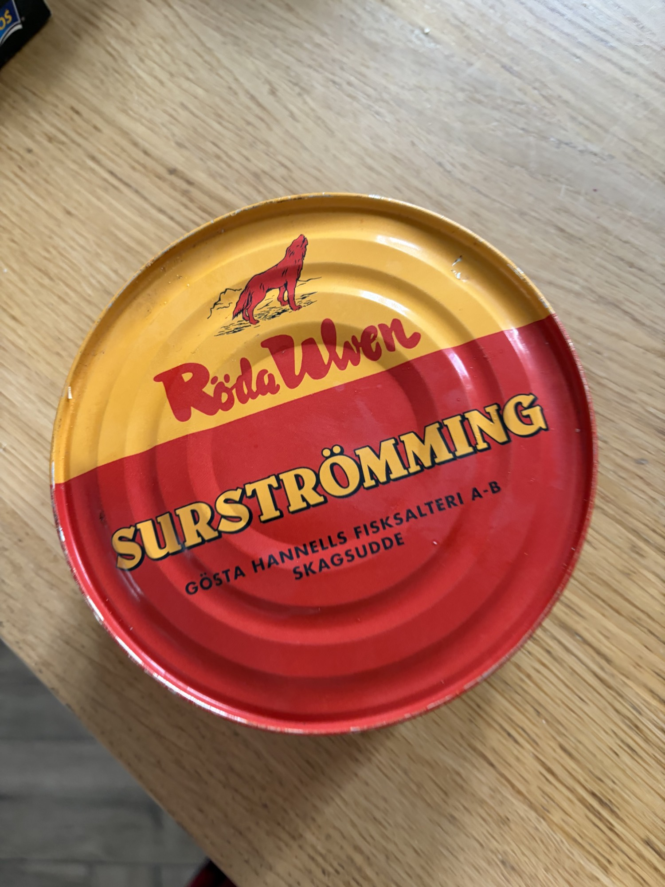

Röda Ulven Surströmming
Famous Swedish fermented Baltic herring — the world's most pungent delicacy.
Röda Ulven Surströmming (Fermented Baltic Herring)
What it is
Surströmming is fermented Baltic herring (Clupea harengus membras), and it is the most polarizing preserved food in the world. Röda Ulven, a respected Swedish producer, follows the traditional method: herring caught in the spring are lightly salted (roughly 15–17% brine, enough to select for Halanaerobium bacteria while suppressing spoilage), then fermented in barrels for several months before being tinned. The fermentation continues in the can, producing carbon dioxide—hence the characteristic bulging tins, which are normal and expected, not a sign of spoilage. The result is a partially digested, intensely ammoniated, profoundly umami-laden fish product that challenges and rewards in equal measure. Quality markers: the fish should be intact (not dissolving into mush), the brine should be cloudy and effervescent, and the aroma should be sharp and ammoniated but not putrid or sulfurous. Röda Ulven is known for consistent quality in a product category where standards vary wildly.
Nutritional profile
A traditional serving of 2–3 fillets (roughly 40–60g) contains approximately 70–100 kcal, 8–12g protein, 3–5g fat, and negligible carbohydrates. The fat content is moderate—Baltic herring are smaller and leaner than Atlantic herring—with a meaningful omega-3 contribution (roughly 800mg–1.5g combined EPA/DHA per 100g). Fermentation increases bioavailable B12 and produces probiotic bacteria (primarily lactic acid bacteria from the early stages). The product is also high in selenium and phosphorus. Sodium is significant due to the brine—expect roughly 800–1200mg per 100g—so this is not suitable for sodium-restricted diets. The fermentation process also produces some histamine, which can be problematic for sensitive individuals.
Preparation & Service
This is the most critical handling section in this entire guide. Read carefully.
Opening the can: Surströmming must be opened underwater, outdoors or in a very well-ventilated area (ideally away from the dining space). The fermentation gas under pressure will spray brine when punctured. Submerge the tin in a bucket or basin of cold water, use a church key or can opener to pierce the lid while still underwater, and allow the gas to bubble out. Once pressure equalizes, fully open the can underwater. The water contains most of the aerosolized odor. Do not open indoors, especially not in a confined kitchen space. The smell will saturate fabrics, ventilation systems, and porous surfaces for hours or days.
Smell management: Open at least 20 meters from the dining area, if outdoors. Have the bucket ready to immediately cover and transport. Consider warning the client in advance—this is a cultural experience, not a clandestine surprise. Some chefs open the can the day before service in a dedicated, ventilated space and store the opened fish submerged in its brine in a sealed container to allow some of the most volatile compounds to dissipate. This is a matter of personal preference and client tolerance.
Service temperature: Serve chilled but not ice-cold—8–10°C. Cold suppresses some of the most aggressive volatile aromas while keeping the texture firm. Drain the fish from the brine (reserve the brine if you are a surströmming enthusiast; otherwise discard). Gently rinse the fillets under cold water if the brine intensity is too high for your client's palate—traditionalists will object, but for a first-time VIP experience, rinsing is reasonable.
Plating: This is best treated as a composed DIY experience rather than a chef-plated dish. Arrange the components traditionally and let the client assemble. Place 2–3 fillets on a plate or small board with the accompaniments arrayed around them.
What NOT to do: Do not open indoors. Do not heat—cooking surströmming releases volatile compounds that are even more aggressive. Do not serve to unsuspecting guests. Do not pair with wine that you care about—the aroma will destroy your ability to taste subtleties. Do not touch the brine and then touch your clothes or face. Do not store opened surströmming in the main refrigerator unless it is in multiple layers of sealed containment; the smell will permeate everything.
Traditional & Modern Eating Context
In northern Sweden (especially around the High Coast, Höga Kusten), surströmming is eaten at late-summer gatherings (surströmmingspremiär) with beer, aquavit, and loud conversation. The traditional assembly is a "surströmmingsklämma": a fold of thin, crisp bread (tunnbröd) wrapped around a piece of fish, a slice of boiled potato, raw onion rings, and a dollop of sour cream. This is eaten with the hands, outdoors, and usually with a group.
For a VIP client, the question is: does this belong in a fine-dining context? The honest answer is: rarely as a composed plate, but compellingly as a cultural experience. If your client is adventurous, well-traveled, and curious about extreme food traditions, a surströmming course can be the unforgettable centerpiece of a Nordic-themed meal. Present it with ceremony: explain the tradition, open it together (or before their arrival), and frame it as participatory theater. Serve it not as a "course" but as an event within the meal—perhaps after the main course and before cheese, with beer and aquavit, as a Swedish digestif of sorts.
If you must integrate it into a tasting menu, keep the portion small (1–1.5 fillets) and the accompaniments generous. Frame the language around "fermented herring" and "Baltic tradition" rather than emphasizing the shock value.
Flavor & Texture
The aroma is the defining characteristic: sharp, ammoniated, and aggressively pungent, like a combination of ripe cheese, rotten eggs (in the most volatile moments), and strong cleaning solution. However, once past the smell (which is front-loaded and aerosolized), the actual flavor is surprisingly complex: deeply savory, almost cheese-like umami, with a faint sweetness from the partially broken-down fish proteins, and a lingering, almost nutty fermentation note. The brine is salty, effervescent, and intensely ammoniated—it is an acquired taste on its own and is often discarded by novices.
The texture of the fish is the surprise: the flesh is soft, almost creamy, with a slight fibrous integrity remaining. The skin is tender and edible, not tough. The bones are very small and mostly dissolve into edibility during fermentation. The overall mouthfeel is unctuous and yielding, closer to a soft pâté than to cooked fish. This is not a "rotten" texture—it is a controlled, enzymatically altered texture that is deliberately soft.
Pairings & Composition
- Bread: Tunnbröd (thin, soft Swedish flatbread) is essential—its mild sweetness and pliability are the traditional wrapper. Crispbread (knäckebröd) is the alternative for a crunchier construction. Dark rye is too aggressive.
- Potatoes: Small, waxy new potatoes, boiled and cooled, sliced into rounds. The starch and bland sweetness are a critical foil.
- Onions: Raw, thinly sliced red or yellow onion—the sharpness cuts through the richness and provides texture contrast.
- Sour cream: Swedish gräddfil or thick sour cream, full-fat. The lactic acid and cool fat are essential balancing agents.
- Tomatoes: Some Swedes add sliced tomato; it adds moisture and acidity but is optional.
- Beverages: Cold lager or pilsner (Swedish or German); ice-cold aquavit (Swedish brännvin with caraway or dill); for wine, do not bother with anything subtle—if wine is demanded, a very cold, simple Grüner Veltliner or Txakoli.
- Dish idea: Surströmmingsklämma, Chef's Presentation—lay out a warm tunnbröd round, a smear of gräddfil, a slice of boiled new potato, a fan of paper-thin raw onion, and half a surströmming fillet. Fold and serve immediately. Arrange 2–3 of these per portion on a wooden board with a small bowl of extra sour cream, onion, and potato for self-assembly. Place a chilled beer and a frozen aquavit glass at each setting. Embrace the mess.